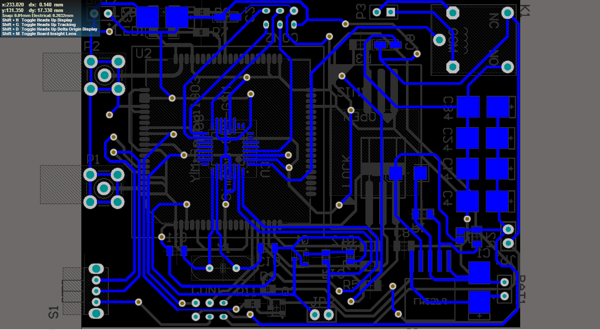

Previously in our group, we formalized SysML activity diagrams by developing a calculus called New Activity Calculus (NuAC). In this work, we redefined NuAC terms to support RTX (Keil Real-Time Operating System) and present an automated SysML/UML activity diagram to RTX code generator, using mapping rules expressed in NuAC. To achieve this goal, we proposed a set of rules that were used for mapping a SysML/ UML activity diagram into a suitable code to be executed on ARM CortexM processor family. To automate the process of code generation, we developed a JAVA application that uses the proposed rules to automatically generate the RTX code from the input activity diagram model.
Video capturing IP implemented on ZYBO Zynq™-7000 Development Board:
Summer 2015 Verilog Linux ZYNQ FPGAIn this project a ZYNQ evaluation board ZYBO with an OV7670 CMOS VGA(640 * 480) Camera chip with omnipixel Technology was used. Using the AXI-Stream, the captured video was streamed out to a VGA display IP. A linux driver was then added to the IP so that the captured data can be accessed on the application level.
Formal Modeling, Verification and Implementation of a Train Control System:
Winter 2015 ARM-CortexM4 Formal Verification Model checking AutoFOUS3 (AF3) PythonIn this project the BART train control system was formally modeled and after verifing the properties of the system, the train control algorithm was then implemented on an ARM Cortex-M4 processor. We first started by formally modelling the train operation and its control system. To verify the correct functionality of the algorithm, we expressed the model in AF3 block representation. Using NuSMV, we verified the essential properties of the system. Finally, the BART’s train control system was implemented on an ARM platform.


Desiging PCB for nRF24L01+ working @ 2.4GHZ using Altium Designer:
Winter 2014 Altium Designer PCBBoard Features:
- – Easy to use with FRDM based platform
- – Arduino Compatible
- – 100m Range at 250kbps
- – 250kbps to 2Mbit Data Rate
- – Multiceiver - 6 Data Pipes
- – Software selectable channel from 2400MHz to 2525MHz (125 Selectable channels)
- – Onboard pin header available to add HC-05 Bluetooth module

Android App for monitoring a WSN:
Winter 2014 Android Java Dropbox API
- – Support upto 120 nodes in the network
- – Automatic recognition of a new Node in the network
- – Using DbxDatastore as the back-end data store
- – Live Network monitor
- – Automatic Network history builder
Modeling a JPEG Encoder using SystemC in C++:
Winter 2013 SystemC C++ Hardware Software Co-designFunctional Verification of RTL design (implementation of a four-operation calculator) using SystemVerilog:
Winter 2013 SystemVerilog Functional Verification- – Creating a class based verfication environment
- – Reaching Overall 70% coverage on all input test cases
- – Creating an automatic randomized test generator
Data Logger based on SIM908:
Winter 2012 Altium Designer PCB|  |
- – Onboard switching power supply (input 9~40 V, Output 4.2v)
- – Smart Battery charger
- – Connectivity: GSM/GPRS
- – Capable of Capturing GPS position